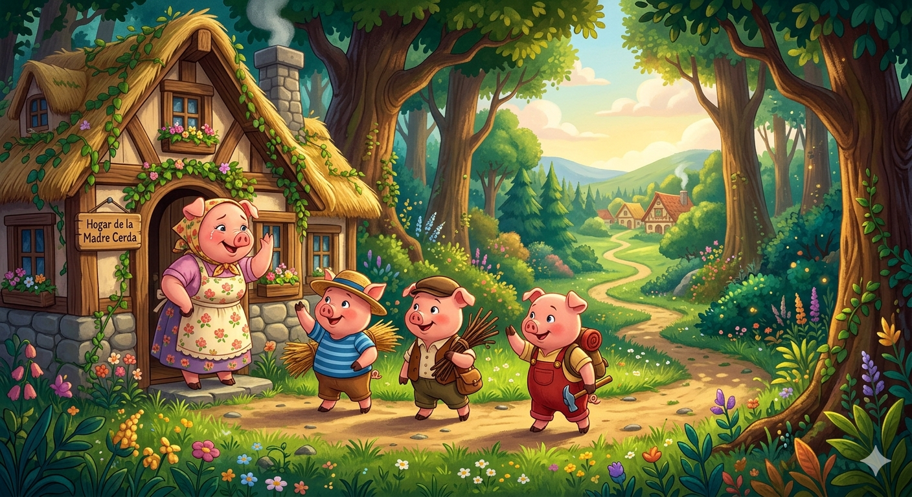
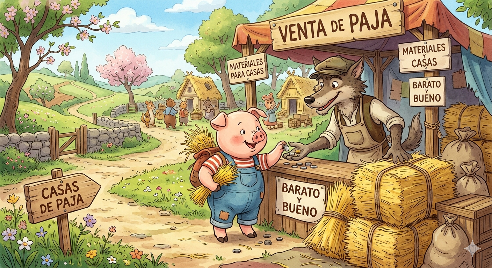
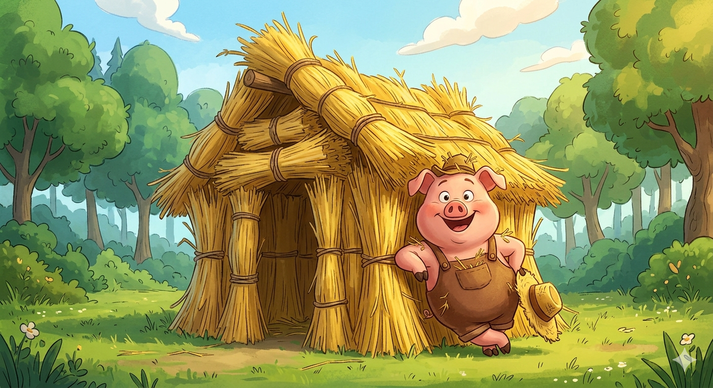
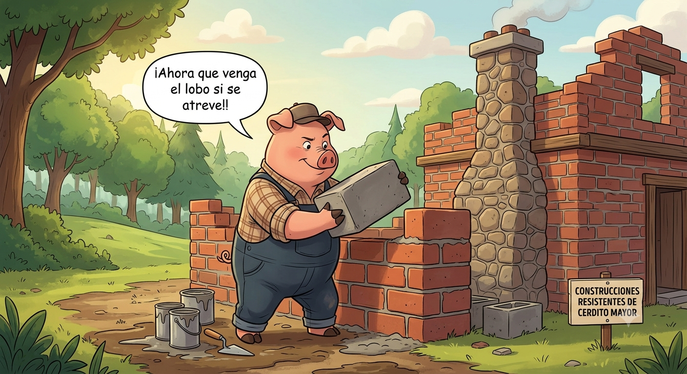

Los Tres Cerditos y el Lobo Feroz
Cuentos Infantiles
En un rincón del bosque vivían tres cerditos junto a su madre. Un buen día, al ver que ya habían crecido lo suficiente, la madre les dijo que era hora de que salieran al mundo a buscar su propio destino y construyeran sus vidas. Los tres hermanos se despidieron con nostalgia y emprendieron su camino. No tardaron mucho en darse cuenta de que la vida en el bosque conllevaba un gran peligro: un lobo feroz rondaba la zona, buscando siempre la oportunidad de atraparlos y convertirlos en su cena. Al darse cuenta del peligro, los cerditos decidieron que lo más sensato era que cada uno se construyera una casa para protegerse del temible depredador.

El cerdito más joven de los tres era muy perezoso y no quería pasar días trabajando; su único deseo era terminar rápido para poder irse a jugar y descansar el resto del día. Mientras caminaba, se cruzó con un hombre que cargaba un gran fardo de paja. Incluso en apenas unas horas, la cabaña de paja estaba terminada. Era ligera, inestable y el viento la hacía crujir, pero el cerdito estaba encantado.

CERDITO MENOR:
"Por favor, señor, ¿podría venderme esa paja para construir mi casa?"
El hombre accedió, y el cerdito menor se puso manos a la obra. Cuando terminó, se sentaba a tocar su flauta sin la menor preocupación
CERDITO MENOR:
""¡Ya estoy a salvo del lobo!"

El segundo hermano era un poco más sensato que el menor, pero tampoco le entusiasmaba la idea de esforzarse demasiado. Pensó que una casa de madera sería lo suficientemente fuerte y se construiría de forma rápida. Encontró a un leñador que llevaba un carro lleno de ramas y troncos delgados. Tras comprarle el material, se dedicó a clavar las maderas. En un par de días, la estructura de madera estuvo lista. No era la casa más firme del mundo, pero parecía resistir. El cerdito mediano, satisfecho con su trabajo, se guardó sus herramientas y se puso a cantar y bailar junto a su hermano menor, celebrando lo rápido que habían terminado.
El hermano mayor, en cambio, era muy maduro, inteligente y trabajador. Sabía perfectamente lo astuto y persistente que podía llegar a ser el lobo feroz. Él pasaba los días cargando pesados bloques, mezclando cemento y levantando paredes firmes, planta por planta. Incluso construyó una sólida chimenea de piedra en el tejado. Le tomó semanas de duro trabajo, pero cuando la terminó, la casa era indestructible.
CERDITO MAYOR:
"Una casa debe ser un refugio de verdad. ¡Ahora que venga el lobo si se atreve!"
